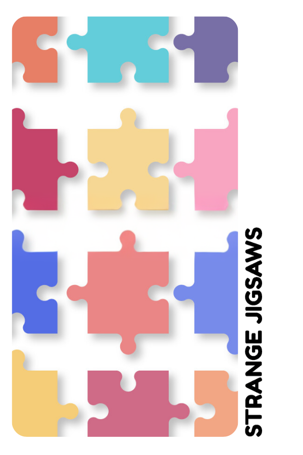

Strange Jigsaws
Every archived year-end list appearance, including placement and points earned.
About the Game
Strange Jigsaws is a puzzle game where you solve strange jigsaws. Solve around 50 or so strange jigsaws, each with their own surprising way of being solved. Explore unusual puzzle worlds themed after jigsaws. Enter the Jigsawverse, maybe. This is a spiritual sequel to my game "20 Small Mazes", but it's a little bit harder.I recommend playing the game using keyboard and mouse.Notes on puzzle accessibility: The game is color-blind friendly. There are two puzzles that use color and they both have a "colorblind mode" toggle on the puzzle itself. The game has accessibility options for hard of hearing or deaf people. There are three separate track of subtitles: background music, sound effects, and voices. Some puzzles require knowledge of English.
| Released | 2025-08-07 |
|---|---|
| Developer | FLEB |
| Publisher | FLEB |
| Genres | Adventure, Casual, Indie |
| Platforms | PC |
SingleplayerSteam AchievementsFull controller supportSteam Cloud2DFamily FriendlyCaptions availableColorfulRelaxingFamily SharingMinimalistAbstract
Where to Buy
Game information provided by RAWG.
Points by Year
List History
| Year | Source | List | Placement | Points |
|---|---|---|---|---|
| 2025 | Polygon | The 50 best games of 2025, as chosen by Polygon | 49 | 1 |